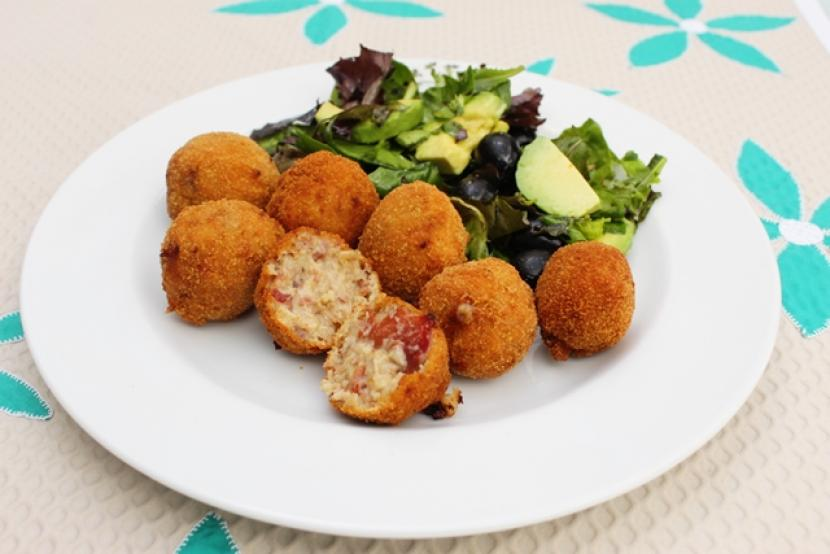

croquetas de papa con jamon
ingredientes
6 Papas cocidas y hechas puré,
200 Gramos de jamón de pavo cortado en cubitos pequeños,
150 Gramos de queso tipo manchego rallado 2 Ramitas de perejil desinfectado y picado finamente,
1/4 De taza de harina de maíz,
2 Cucharadas de Jugo MAGGI®,
1/4 De taza de fécula de maíz,
2 Huevos ligeramente batidos,
1 Taza de pan molido, Aceite vegetal para freír.
la preparacion
Prepara la masa de papa, 1. Mezcla la papa con el jamón, el queso, el perejil, la harina de maíz y el Jugo MAGGI®.
Forma las croquetas, 2. Toma una porción de la mezcla y con las palmas de la mano forma las croquetas. Pasa las croquetas por la fécula de maíz, luego por el huevo y al final empaniza con el pan molido.
Fríe las croquetas 3. Calienta suficiente aceite y fríe las croquetas hasta que doren por completo. Ofrece al momento.